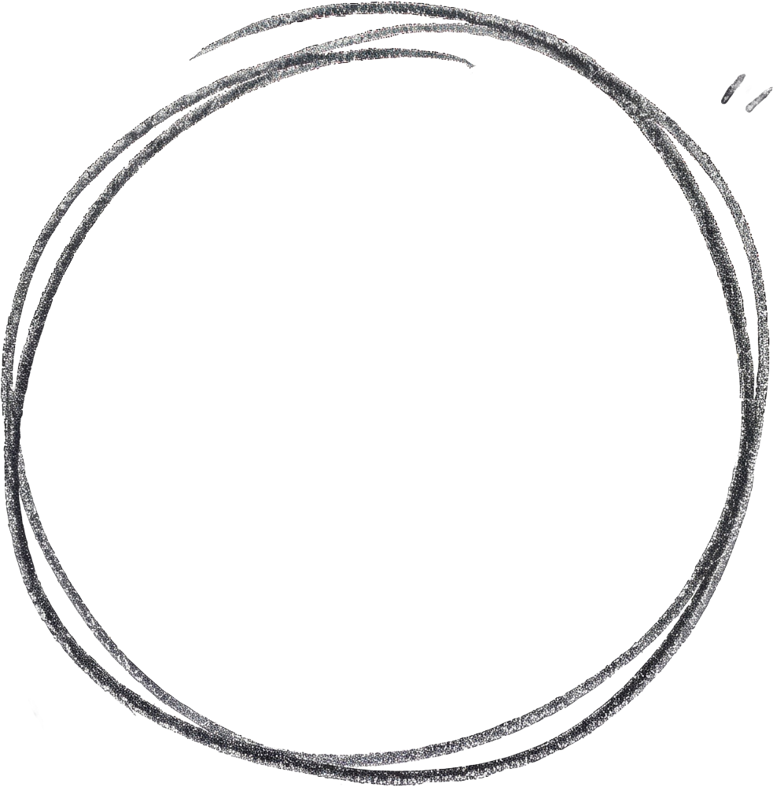

C'è un momento in cui anche i luoghi in cui ci raccontiamo hanno bisogno di riflettere lo spazio che abbiamo conquistato.
Stiamo rinnovando la nostra casa digitale: una veste grafica completamente nuova e idee inedite per accompagnarvi con ancora più precisione nel mondo della salute.
Cambia l'aspetto, ma la rotta resta la stessa: la solidità di oltre venticinque anni di esperienza sul campo, la cura nell'ascolto e la precisione della ricerca.
Stay tuned.